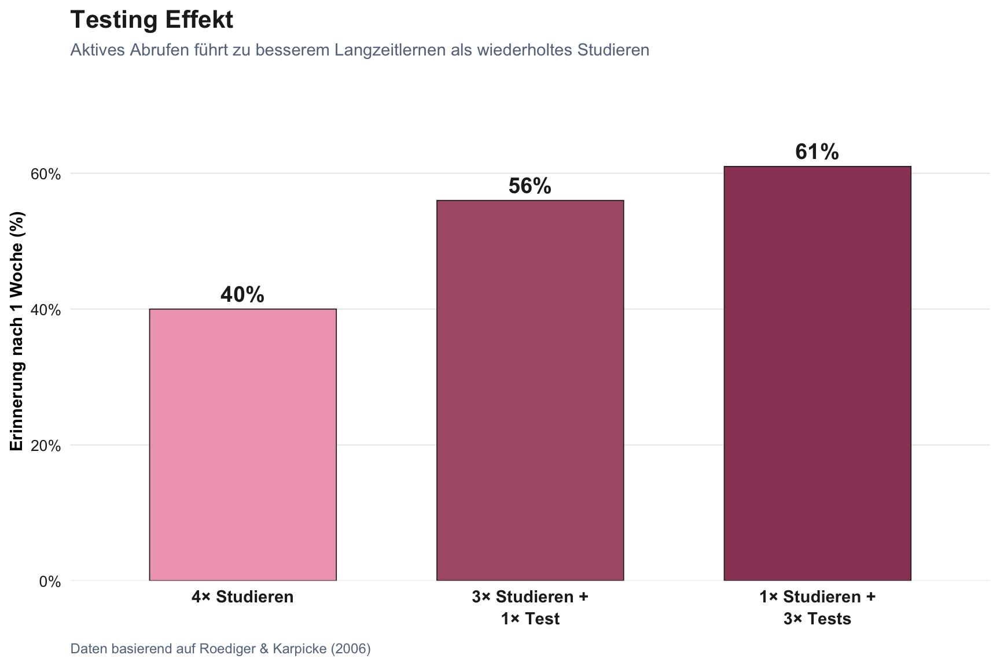

Wie Menschen lernen
Warum sich effektives Lernen oft anstrengend anfühlt, und was dabei im Kopf passiert.
In diesem ersten Teil legen wir die wissenschaftlichen Grundlagen: Wie funktioniert Lernen aus kognitionspsychologischer Sicht? Und warum ist das, was sich wie Lernen anfühlt, oft das Gegenteil?
Diese Grundlagen helfen dir, in Teil 2 und 3 informierte Entscheidungen über den Einsatz von KI in deiner Lehre zu treffen.
Vom Wissen zum Können: Was beim Aufbau von Expertise im Kopf passiert
FacilitatorSlides + Aktivitäten (ca. 45 Min gesamt)
Präsentiere die Slides (Richtwert: 25 Min). Zwei Mikropausen einbauen (je 30 Sek): eine nach den CLT-Slides, eine nach dem Lernparadox. Die Arbeitsgedächtnis-Übung kommt nach dem Abschnitt über Arbeitsgedächtnis.
Zeitcheck nach den Slides:
- Vor 09:35 fertig? Alle Aktivitäten: Arbeitsgedächtnis-Übung (3 Min) + Gedächtnis-Aktivierung (1 Min) + Vertrautheit ≠ Verständnis (1 Min) + Fallstudien-Analyse (10 Min) + Wichtigste Erkenntnis (1 Min)
- Um 09:40 fertig? Arbeitsgedächtnis-Übung (3 Min) + Fallstudien-Analyse (10 Min) + Vertrautheit ≠ Verständnis (1 Min) + Wichtigste Erkenntnis (1 Min)
- Nach 09:40 fertig? Nur Fallstudien-Analyse (10 Min) + Wichtigste Erkenntnis (1 Min)
Die Fallstudien-Analyse ist die zentrale Transferaktivität und darf nicht gekürzt werden.
HinweisArbeitsgedächtnis erleben
FacilitatorModerationshinweis
Wähle Variante A oder B für die Arbeitsgedächtnis-Übung.
Active-processingVariante A: Rechenketten (3 Min)
Elementinteraktivität spüren: Dieselben Zahlen, zwei verschiedene Aufgaben.
- Aufgabe 1 (Speichern): Du hörst vier Zahlen (z.B. 3, 7, 2, 5). Schreibe sie nach einer kurzen Pause auf.
- Aufgabe 2 (Verarbeiten): Du hörst eine Rechenaufgabe mit denselben vier Zahlen: “Nimm 3. Addiere 7. Multipliziere mit 2. Subtrahiere 5.” Löse im Kopf und notiere das Ergebnis.
- Bonusrunde: Zwei Rechenketten gleichzeitig, abwechselnd ein Schritt pro Kette.
Pro-tipDie Pointe: Rechenketten
In beiden Aufgaben waren es vier Zahlen. In Aufgabe 1 waren sie unabhängig voneinander. In Aufgabe 2 musste jede Zahl mit den vorherigen in Beziehung verarbeitet werden. Genau das passiert beim Verstehen neuer Konzepte: Studierende müssen Elemente und ihre Beziehungen gleichzeitig im Arbeitsgedächtnis halten. Nicht die Menge, sondern die Interaktion zwischen den Elementen erzeugt die kognitive Belastung.
Active-processingVariante B: Sortieraufgabe (3 Min)
Elementinteraktivität spüren: Dieselben Begriffe, zwei verschiedene Aufgaben.
- Aufgabe 1 (Speichern): Merke dir diese vier Begriffe: Hund, Tisch, Wolke, Ring. Schreibe sie nach einer kurzen Pause auf.
- Aufgabe 2 (Verarbeiten): Ordne dieselben vier Begriffe gleichzeitig in eine logische Reihenfolge vom Kleinsten zum Grössten und erkläre deinem Nachbarn, warum deine Reihenfolge stimmt.
Pro-tipDie Pointe: Sortieraufgabe
Die vier Begriffe sind dieselben. Euer Arbeitsgedächtnis hat sich nicht verändert. Was sich verändert hat, ist die Elementinteraktivität: In Aufgabe 2 müssen die Elemente gleichzeitig zueinander in Beziehung gesetzt werden. Genau das passiert, wenn eure Studierenden ein neues Konzept verstehen sollen, bei dem alles mit allem zusammenhängt. Der Flaschenhals ist nicht die Anzahl der Elemente, sondern die Anzahl der Verbindungen, die gleichzeitig verarbeitet werden müssen.
TippMeta-Moment
Diese Übung demonstriert Elementinteraktivität, das zentrale Konzept der Cognitive Load Theory. Die Kapazitätsgrenze des Arbeitsgedächtnisses wird nicht durch die Anzahl isolierter Elemente bestimmt, sondern durch die Anzahl der Beziehungen zwischen Elementen, die gleichzeitig verarbeitet werden müssen. Dieselbe Erfahrung, die hier in drei Minuten spürbar wird, findet in jeder Lehrveranstaltung statt, wenn Studierende neue Konzepte verstehen sollen. Der Workshop macht erlebbar, was er erklärt.
Active-processingGedächtnis-Aktivierung (1 Min)
Versuche aus dem Gedächtnis: Was ist der Expertise Reversal Effect in einem Satz? Warum ist er für KI in der Lehre relevant?
Das ist keine Prüfung. Lücken sind willkommen: Sie zeigen dir, worauf du beim Weiterhören besonders achten kannst.
Active-processingVertrautheit ≠ Verständnis (1 Min)
Schätze ehrlich: Wie gut hast du die Cognitive Load Theory verstanden? (1 = gar nicht, 5 = könnte sie erklären)
Jetzt: Erkläre deinem Nachbarn in 30 Sekunden den Unterschied zwischen intrinsischer und extrinsischer Last, ohne in die Slides zu schauen.
Pro-tipDie Pointe: Metakognitive Falle
Die Lücke zwischen deiner Einschätzung und deiner tatsächlichen Erklärfähigkeit ist die metakognitive Falle. Fliessend zuhören erzeugt Vertrautheit, nicht Verständnis. Eure Studierenden erleben das nach jeder Vorlesung.
PairFallstudien-Analyse (10 Min)
Analysiert in Paaren ein Szenario-Paar (z.B. A1 und A2, oder B1 und B2), ein effektives und ein ineffektives Beispiel für KI-Integration in der Lehre.
Leitfrage: Welches Szenario erzeugt mehr Lernen? Warum?
Nutzt die Konzepte aus Teil 1:
- Arbeitsgedächtnis & Langzeitgedächtnis
- Desirable Difficulties & metakognitive Falle
- Cognitive Load Theory (extrinsisch vs. germane)
- Expertise Reversal Effect
Euer Ergebnis: Formuliert gemeinsam in 2-3 Sätzen: (1) Welcher kognitive Mechanismus wird im ineffektiven Szenario umgangen? (2) Wie stellt das effektive Szenario diesen Mechanismus wieder her? Seid bereit, eure Antwort in 30 Sekunden im Plenum vorzustellen.
IndividualWichtigste Erkenntnis (1 Min)
Schreibe in einem Satz auf: Was ist die wichtigste Erkenntnis aus Teil 1 für deine eigene Lehre?
Diese Konsolidierung vor der Pause hilft, das Gelernte zu verankern, bevor neuer Input kommt.
Die folgenden Abschnitte vertiefen die Konzepte aus den Slides. Sie sind als Nachlese-Material für das Selbststudium gedacht.
NachlesenDie kognitive Architektur
Arbeitsgedächtnis: Der Flaschenhals
Der Aufmerksamkeitsfokus unseres Arbeitsgedächtnisses umfasst nur etwa 4±1 Elemente gleichzeitig (Cowan 2010). Jeder Denkakt (Verstehen, Problemlösen, Entscheiden) muss durch diesen Flaschenhals.
Wichtig: Die Zahl “4±1” gilt für einfache, unverbundene Elemente. Die effektive Kapazität hängt stark vom Vorwissen ab. Experten verarbeiten “F = ma” als einen Chunk, Anfänger als drei separate Elemente. Cowan (2010) beschreibt Arbeitsgedächtnis als aktivierte Teile des Langzeitgedächtnisses: Vorwissen kann schnell aktiviert werden und die aktuelle Verarbeitung unterstützen. Dasselbe Material, dieselbe Erklärung, aber eine fundamental unterschiedliche kognitive Aufgabe, je nach Vorwissen.
Und: Pausen sind keine verlorene Zeit. Das TBRS-Modell (Barrouillet und Camos 2015) zeigt, dass Aufmerksamkeit zwischen Verarbeitung und Auffrischung von Gedächtnisspuren geteilt werden muss. Schon kurze Mikropausen (30–60 Sekunden) zwischen Instruktionssegmenten geben dem Gehirn Zeit, zerfallende Spuren aufzufrischen. Das Modell legt nahe, dass ununterbrochene Vermittlung schädlicher ist als dieselbe Menge Inhalt mit Atempausen.
Vertiefung: Arbeitsgedächtnis und Instruktion. Die vier Modelle des Arbeitsgedächtnisses und was sie für die Lehre bedeuten
Langzeitgedächtnis: Der unbegrenzte Speicher
Das Langzeitgedächtnis ist praktisch unbegrenzt, aber passives Aufnehmen genügt nicht. Damit Inhalte ins Langzeitgedächtnis gelangen, braucht es aktive kognitive Prozesse: Abrufen, Elaborieren und Verknüpfen.
Dabei ist “Gedächtnis” kein einheitliches System: Deklaratives Wissen (Fakten, Konzepte) und prozedurales Wissen (Fertigkeiten, Abläufe) folgen unterschiedlichen Regeln und erfordern unterschiedliche Instruktionsansätze. Und der Übergang von episodischem Erinnern (“die Dienstags-Vorlesung in Raum 204”) zu semantischem Wissen (“Regression minimiert quadrierte Residuen”) geschieht nicht automatisch, sondern erfordert variierende Begegnungen und aktiven Abruf.
NachlesenVom Anfänger zum Experten
Was unterscheidet Anfänger von Experten?
Experten haben kein grösseres Arbeitsgedächtnis. Sie haben ein besser organisiertes Langzeitgedächtnis mit reichen, vernetzten Schemata, die als “Chunks” funktionieren.
| Anfänger | Experte | |
|---|---|---|
| Wissen | Isolierte Fakten (deklarativ) | Vernetzte Schemata (prozedural) |
| Verarbeitung | Bewusst, langsam, fehleranfällig | Automatisiert, schnell, flexibel |
| Arbeitsgedächtnis | Schnell überlastet | Effizient durch Chunking |
| Transfer | Kontextgebunden, fragil | Flexibel auf neue Situationen anwendbar |
Wissenskompilation: Der Lernprozess
Der Weg vom Anfänger zum Experten verläuft nach ACT-R (Anderson 1982) über Wissenskompilation: Deklaratives Wissen (Regeln, die man bewusst anwendet) wird durch tausende Übungszyklen mit Feedback zu prozeduralem Wissen (automatisierte Produktionsregeln). Dieser Prozess erfordert aktive Verarbeitung, Übung und Rückmeldung.
Ergänzend dazu beschreibt die Forschung zu Vorhersagefehlern (aus einer anderen theoretischen Tradition) einen weiteren wichtigen Lernmechanismus: Das Gehirn bildet Erwartungen, vergleicht sie mit der Realität und aktualisiert seine internen Modelle bei Diskrepanzen. Zusammen mit Konsolidierung, Elaboration und Mustererkennung erklären diese Mechanismen, warum die didaktischen Strategien funktionieren, die wir gleich kennenlernen.
Überraschung aus der Motorik-Forschung: Explizites, strategisches Denken nimmt mit Expertise zu, allerdings auf einer höheren Ebene. Experten automatisieren Grundkomponenten, denken aber bewusster über übergeordnete Strategien nach als Anfänger.
Expertise Reversal Effect
Was Anfängern hilft, schadet Experten, und umgekehrt (Kalyuga 2009):
- Worked Examples sind für Anfänger effektiver als Problemlösen
- Für Experten kehrt sich dieser Effekt um
- Die Asymmetrie zwischen Anfängern und Experten wird ein zentrales Thema für KI in der Lehre
NachlesenWarum sich effektives Lernen anstrengend anfühlt
Wünschenswerte Schwierigkeiten (Desirable Difficulties)
Vier Strategien, die sich schwerer anfühlen, aber besseres Lernen erzeugen (E. L. Bjork und Bjork 2011):
- Abrufpraxis (Retrieval Practice): Aktives Erinnern statt Wiederlesen
- Verteiltes Lernen (Spacing): Über Zeit verteilen statt Pauken
- Abwechslung (Interleaving): Aufgabentypen mischen statt blockweise üben
- Generierungseffekt: Selbst produzieren statt passiv aufnehmen
Diese vier Strategien haben eines gemeinsam: Sie erzwingen variierende Verarbeitung in unterschiedlichen Kontexten und bauen so kontextunabhängige Abrufpfade auf, die Transfer ermöglichen (R. Bjork und Bjork 1992).
Die metakognitive Falle
Was sich wie Lernen anfühlt, ist oft keines. Was sich schwierig anfühlt, produziert oft das beste Lernen.
Fliessend lesen = “Ich verstehe das”. Aber: Vertrautheit ist nicht Verständnis. Die metakognitive Falle: Subjektive Leichtigkeit ist ein schlechter Indikator für tatsächliches Lernen.
Cognitive Load Theory
Zwei Quellen kognitiver Belastung:
| Typ | Beschreibung | Ziel |
|---|---|---|
| Intrinsisch | Komplexität des Materials selbst (abhängig von Elementinteraktivität und Vorwissen) | Angemessen dosieren |
| Extrinsisch | Schlechtes Design, Ablenkung, trägt nicht zum Lernen bei | Minimieren |
Das Designprinzip: Extrinsische Last reduzieren → Arbeitsgedächtnisressourcen freisetzen, damit sie für die produktive Verarbeitung der intrinsischen Komplexität zur Verfügung stehen. In der älteren CLT-Literatur hiess diese produktive Verarbeitung “germane load”; heute spricht man präziser von germane processing, also der lernrelevanten Auseinandersetzung mit dem Material.
Schwierig ≠ Komplex
Eine häufig übersehene Unterscheidung (Chen, Paas, und Sweller 2023): Aufgaben können schwierig sein, ohne komplex zu sein, und umgekehrt. Schwierig ist eine Aufgabe, wenn viele Elemente gelernt werden müssen, die aber unabhängig voneinander sind (z.B. Fachvokabular, Periodensystem-Symbole, Quellenformate). Die Elementinteraktivität ist niedrig, das Arbeitsgedächtnis wird kaum beansprucht. Komplex ist eine Aufgabe, wenn die Elemente gleichzeitig in Beziehung zueinander verarbeitet werden müssen (z.B. eine Argumentation aufbauen, eine Gleichung lösen, einen Fall analysieren). Die Elementinteraktivität ist hoch, und genau hier findet Schemabildung statt.
Für den KI-Einsatz ist die Unterscheidung entscheidend: Bei schwierigen, aber nicht komplexen Aufgaben (niedrige Elementinteraktivität) kann KI-Unterstützung sinnvoll sein, weil diese Aufgaben keine Schemata aufbauen. Bei komplexen Aufgaben (hohe Elementinteraktivität) ist KI-Outsourcing schädlich, weil genau die kognitive Arbeit, die Schemata aufbaut, eliminiert wird.
WichtigWie die Konzepte zusammenhängen
Die Konzepte aus Teil 1 stammen aus verschiedenen Forschungstraditionen, ergänzen sich aber für die Lehrpraxis:
- Cognitive Load Theory erklärt, wie Instruktionsdesign die Arbeitsgedächtnisbelastung optimieren kann (extrinsische Last minimieren, produktive Verarbeitung ermöglichen)
- Desirable Difficulties beschreiben Lernbedingungen, die sich schwierig anfühlen, aber langfristiges Behalten fördern (Abrufpraxis, Spacing, Interleaving, Generierung)
- Wissenskompilation (ACT-R) modelliert den Übergang von deklarativem zu prozeduralem Wissen durch Übung und Feedback
- Vorhersagefehler beschreiben, wie das Gehirn aus Diskrepanzen zwischen Erwartung und Erfahrung lernt
Gemeinsam ist diesen Ansätzen: Lernende müssen aktiv verarbeiten (abrufen, elaborieren, vergleichen, anwenden). Diese Prozesse fühlen sich oft anstrengend an, und genau das signalisiert, dass Lernen stattfinden kann.
Ein scheinbarer Widerspruch zwischen diesen Traditionen verdient Beachtung: Einerseits zeigt die Forschung zu expliziter Instruktion, dass Anfänger bei minimaler Anleitung scheitern. Andererseits zeigt die Desirable-Difficulties-Forschung, dass es dem langfristigen Lernen schadet, wenn man es Lernenden zu leicht macht. Der Expertise Reversal Effect löst diese Spannung auf: Anfänger brauchen mehr Anleitung, um unproduktive kognitive Belastung zu reduzieren, während Fortgeschrittene von “productive struggle” profitieren. Entscheidend ist, den Grad der Unterstützung an den aktuellen Wissensstand der Lernenden anzupassen.
All diese Mechanismen dienen einem tieferen Zweck: Sie bauen interne Modelle auf, die es ermöglichen, von Erfahrungen auf neue Situationen zu generalisieren. Gut organisierte Schemata sind eine notwendige Voraussetzung für Transfer, aber allein nicht hinreichend. Transfer erfordert auch Übung darin, zu erkennen, wann und wo das eigene Wissen anwendbar ist. Genau deshalb sind Variation und Interleaving so wichtig: Sie schaffen die Abrufpfade, die Wissen auf neue Kontexte übertragbar machen. Wer die Prozesse eliminiert, die diese internen Modelle aufbauen, eliminiert die Fähigkeit zur Generalisierung.
Pro-tipVertiefung: Warum Kontext das Erinnern bestimmt
Tulvings Encoding-Specificity-Prinzip (2002) zeigt: Gedächtnisabruf funktioniert am besten, wenn der Abrufkontext mit dem Lernkontext übereinstimmt. Studierende “wissen” oft etwas im Vorlesungskontext, können aber in der Prüfung nicht darauf zugreifen, weil der Abrufpfad kontextabhängig ist. Das ist ein starkes Argument für variierende Kontexte beim Üben und für Interleaving: Jeder neue Kontext schafft zusätzliche Abrufpfade und macht Wissen transferierbarer.
Für das Selbststudium
- Arbeitsgedächtnis und Instruktion. Die vier Modelle des Arbeitsgedächtnisses und was sie für Lehrdesign bedeuten
- Gedächtnis und Lernen. Wie Erinnerungen entstehen, sich verändern und warum Abruf der stärkste Lernmechanismus ist
- Wie man Kompetenzen erwirbt. Wissenschaftliche Grundlagen der Expertise-Entwicklung
Literatur
Anderson, John R. 1982. „Acquisition of Cognitive Skill“. Psychological Review 89 (4): 369–406. https://doi.org/10.1037/0033-295X.89.4.369.
Barrouillet, Pierre, und Valérie Camos. 2015. Working Memory: Loss and Reconstruction. Working Memory: Loss and Reconstruction. New York, NY, US: Psychology Press.
Bjork, Elizabeth Ligon, und Robert A. Bjork. 2011. „Making Things Hard on Yourself, but in a Good Way: Creating Desirable Difficulties to Enhance Learning“. In Psychology and the Real World: Essays Illustrating Fundamental Contributions to Society, 56–64. New York, NY, US: Worth Publishers.
Bjork, Robert, und Elizabeth Bjork. 1992. „A New Theory of Disuse and an Old Theory of Stimulus Fluctuation“. Essays in honor of William K. Estes, Vol. 1991: From learning theory to connectionist theory, Januar, 1935–67.
Chen, Ouhao, Fred Paas, und John Sweller. 2023. „A Cognitive Load Theory Approach to Defining and Measuring Task Complexity Through Element Interactivity“. Educational Psychology Review 35 (2): 63. https://doi.org/10.1007/s10648-023-09782-w.
Cowan, Nelson. 2010. „The Magical Mystery Four: How Is Working Memory Capacity Limited, and Why?“ Current Directions in Psychological Science 19 (1): 51–57. https://doi.org/10.1177/0963721409359277.
Kalyuga, Slava. 2009. „The Expertise Reversal Effect“. In Managing Cognitive Load in Adaptive Multimedia Learning, 58–80. IGI Global Scientific Publishing. https://doi.org/10.4018/978-1-60566-048-6.ch003.
Tulving, Endel. 2002. „Episodic Memory: From Mind to Brain“. Annual Review of Psychology 53: 1–25. https://doi.org/10.1146/annurev.psych.53.100901.135114.